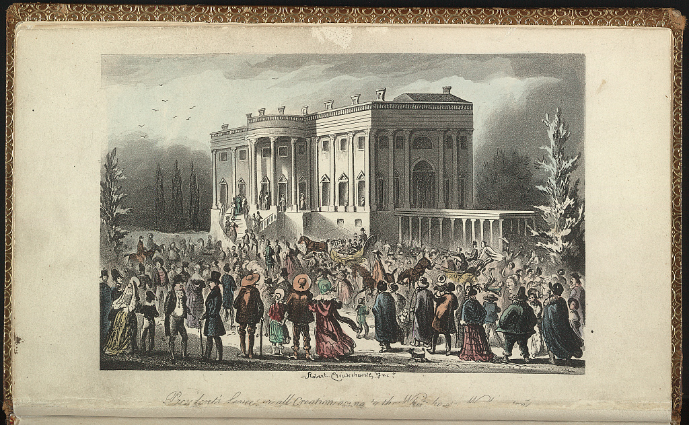

Directions: Work through the five stations in order. Each station holds one record of the democracy of 1828 and 1829: the president stating his doctrine of office, a witness describing his inauguration, a record of the widening vote, a record of the bargain charge, and a record of the people the widening shut out. For each record, state who gained standing in the people's democracy and who lost it or was left outside it. At the end, judge whether 1828 deserves its name as the birth of democratic politics in America, and defend your judgment from the documents.
Source: Andrew Jackson, First Annual Message to Congress, December 8, 1829, in James D. Richardson, editor, A Compilation of the Messages and Papers of the Presidents (Washington, 1896). The passage is Jackson's case for rotation in office. Cuts are marked with ellipses and disclosed here.
There are, perhaps, few men who can for any great length of time enjoy office and power without being more or less under the influence of feelings unfavorable to the faithful discharge of their public duties. ... Office is considered as a species of property, and government rather as a means of promoting individual interests than as an instrument created solely for the service of the people. ... The duties of all public officers are, or at least admit of being made, so plain and simple that men of intelligence may readily qualify themselves for their performance; and I can not but believe that more is lost by the long continuance of men in office than is generally to be gained by their experience. I submit, therefore, to your consideration whether the efficiency of the Government would not be promoted and official industry and integrity better secured by a general extension of the law which limits appointments to four years.
Jackson says office is considered as a species of property. State, in his argument, what that habit does to government, quoting the phrase he sets against it.
Who gains standing under this doctrine, and on what claim? State the claim about the duties of public officers that the whole doctrine rests on.
Source: Margaret Bayard Smith, letter of March 1829 on the inauguration of March 4, 1829, in The First Forty Years of Washington Society, edited by Gaillard Hunt (New York: Charles Scribner's Sons, 1906). Smith led Washington society and knew every administration since Jefferson's. Spelling follows the 1906 edition. Cuts are marked with ellipses and disclosed here.

Thousands and thousands of people, without distinction of rank, collected in an immense mass round the Capitol, silent, orderly and tranquil, with their eyes fixed on the front of that edifice, waiting the appearance of the President in the portico. ... But what a scene did we witness! The Majesty of the People had disappeared, and a rabble, a mob, of boys, negros, women, children, scrambling, fighting, romping. ... Cut glass and china to the amount of several thousand dollars had been broken in the struggle to get the refreshments ... Ladies and gentlemen, only had been expected at this Levee, not the people en masse. But it was the People's day, and the People's President and the People would rule.
Smith describes two crowds on one day. State how each crowd behaves, quoting one phrase for each, and name the building where each scene happens.
Who gained standing on this day, in Smith's own closing judgment? Quote her closing sentence as your evidence, and state how the Cruikshank print judges the same crowd.
Source: Teaching summary, written for this lesson from the state constitutions and suffrage laws of the 1810s and 1820s. This station is a summary, not a quotation, and it is labeled as one on its face.
Teaching summary. At the founding, most states limited the vote to white men who owned property or paid taxes. In the 1810s and 1820s the limits fell state by state. New western states entered the union with constitutions that let nearly every white man vote. Older states followed: Connecticut rewrote its rules in 1818, Massachusetts in 1820, and New York's convention of 1821 removed the property test for white men, a change completed in 1826. By the election of 1828, property tests for white men survived in only a few states, among them Rhode Island, Virginia, and Louisiana. Turnout in the presidential election of 1828 ran near three times the turnout of 1824, as the new voters used the vote the states had given them.
State the legal change this summary records, the years it ran, and the evidence the summary gives that the new voters used the vote.
Who gained standing in this record? Answer from the summary's own terms, naming the class of men the new constitutions admitted and one old state and one fact about new states as your evidence.
Source: Teaching summary, written for this lesson from the public record of the election of 1824 and the House of Representatives election of February 9, 1825. This station is a summary, not a quotation, and it is labeled as one on its face.
Teaching summary. Four candidates divided the electoral vote of 1824: Andrew Jackson 99, John Quincy Adams 84, William Crawford 41, and Henry Clay 37. No candidate held the majority the Constitution requires, so the House of Representatives chose among the top three, each state delegation casting one vote. Clay, fourth and out of the contest, was Speaker of the House and threw his support to Adams. On February 9, 1825, the House elected Adams with the votes of thirteen state delegations. In March, President Adams appointed Clay secretary of state. Jackson's supporters charged a corrupt bargain, that Clay had delivered the House in exchange for the office. Adams and Clay both denied any bargain, and no document or witness has ever established one.
State the sequence this summary documents, giving the electoral figures and the House result with its date.
Separate the documented record from the charge. State what the charge claimed, what would count as proof of it, and what the summary says about that proof.
Source: Teaching summary, written for this lesson from the New Jersey suffrage law of 1807 and the Pennsylvania constitution of 1838. This station is a summary, not a quotation, and it is labeled as one on its face.
Teaching summary. New Jersey's first constitution of 1776 gave the vote to all inhabitants worth fifty pounds, and under it some women and some free Black men voted for thirty years. In 1807, after a disputed local election, the legislature passed a law limiting the vote to free white male citizens, and the women and Black men who had voted lost the right in a state that had let them cast ballots. Pennsylvania's constitution of 1790 had given the vote to freemen without a color line, and free Black men voted in the state for decades. The constitutional convention of 1837 and 1838 rewrote the clause to read white freemen, and the constitution of 1838, ratified that year, took the vote from Black Pennsylvanians at the same moment white men elsewhere held it without property. In both states the closing was done by law, in print, in the same decades as the widening.
State what each state did, with its year: who had voted in New Jersey before 1807, and what single word Pennsylvania's 1838 constitution placed before freemen.
Who lost standing in this record, and by what instrument? State why this station belongs in a file on the widening of democracy, using the dates as your evidence.
Build the ledger from the five stations. For each record, state who gained standing in the people's democracy and who lost it or was left outside it, in one sentence each grounded in the station.
| Record | Who gained standing | Who lost standing or was left outside |
|---|---|---|
| First Annual Message, 1829 | ||
| Smith's inauguration letter, 1829 | ||
| The widening vote, 1810s to 1828 | ||
| The corrupt bargain record, 1824 to 1825 | ||
| The exclusion record, 1807 and 1838 |
Close the file with a verdict. Judge whether 1828 deserves its name as the birth of democratic politics in America. Defend your judgment against the strongest record on the other side, using evidence from at least two stations, one of them Station 5.
State what treating office as property does to government, with Jackson's phrase against it. Long officeholding breeds indifference to the public interest and toleration of misconduct, so office comes to be considered as a species of property, and government is diverted from its legitimate ends to support the few at the expense of the many. The phrase Jackson sets against it is government as an instrument created solely for the service of the people.
Who gains standing, and on what claim about the duties? Ordinary citizens gain standing as the rightful holders of office in turn. The doctrine rests on the claim that the duties of all public officers are, or at least admit of being made, so plain and simple that men of intelligence may readily qualify themselves for their performance, so experience in office is worth less than the rotation that keeps office from hardening into property. His practical proposal is a general extension of the law limiting appointments to four years.
State how each crowd behaves, with a phrase for each and the building. At the Capitol, the crowd is silent, orderly and tranquil, thousands collected in an immense mass without distinction of rank, eyes fixed on the portico. At the White House reception, the crowd becomes a rabble, a mob, scrambling, fighting, romping in Smith's words, breaking cut glass and china in the struggle for refreshments and driving the president out. Credit requires both buildings and one quoted phrase for each crowd.
Who gained standing, in Smith's closing judgment, and how does the print judge the crowd? The people gained standing, in Smith's own sentence: But it was the People's day, and the People's President and the People would rule. Ladies and gentlemen only had been expected at the levee, not the people en masse. The Cruikshank print, The President's Levee, or All Creation Going to the White House, judges the same crowd as a satire: all creation, in every dress and condition, pressing on the president's house as spectacle rather than majesty. Full credit answers notice that she, not two different witnesses, wrote both scenes.
State the legal change, its years, and the evidence of use. Between the 1810s and 1828, state after state removed the property and taxpaying tests on white men's voting, new states entering with broad white manhood suffrage and older states rewriting their rules. The evidence of use is turnout: the election of 1828 drew near three times the turnout of 1824.
Who gained standing? White men without property gained standing as voters in their own right. Evidence from the summary: New York's convention of 1821 removed the property test for white men, completed in 1826, and the new western states entered the union with constitutions that let nearly every white man vote, so by 1828 property tests for white men survived in only a few states, among them Rhode Island, Virginia, and Louisiana.
State the sequence, with figures and date. The electoral vote of 1824 stood Jackson 99, Adams 84, Crawford 41, Clay 37, with no majority. The House chose among the top three by state delegation. Clay, fourth and Speaker of the House, supported Adams, and on February 9, 1825, the House elected Adams with thirteen state delegations. In March, Adams appointed Clay secretary of state.
Separate the record from the charge. The documented record is the sequence itself: the electoral figures, Clay's support, the House vote, and the appointment. The charge is that Clay delivered the House in exchange for the office. Proof would be a document, a witness, or an admission showing an agreement made before the House voted. Adams and Clay denied any bargain, and no document or witness has ever established one.
State what each state did, with its year. New Jersey: under the constitution of 1776, all inhabitants worth fifty pounds could vote, and some women and some free Black men voted for thirty years; the law of 1807 limited the vote to free white male citizens and ended their voting. Pennsylvania: the constitution of 1790 spoke of freemen without a color line; the constitution of 1838 placed the word white before freemen, taking the vote from free Black men who had cast it.
Who lost standing, by what instrument, and why does the station belong in this file? Women and free Black men in New Jersey, and free Black men in Pennsylvania, lost standing they had actually held, and they lost it by law: a statute in 1807 and a constitutional clause in 1838. The station belongs because the closings are dated inside the widening itself, 1807 in the years the states began opening the white vote and 1838 a decade after 1828, so exclusion was not an old inheritance the new democracy had yet to reach. It was enacted alongside the expansion, by the same instruments, laws and constitutions.
The First Annual Message gains standing for citizens in turn, who may hold office without a permanent class ahead of them, and leaves outside the claim of experienced officeholders, whose standing Jackson treats as the problem itself. Smith's letter gains standing for the people en masse in the president's house and records the discomfort of the Washington society that had expected ladies and gentlemen only. The widening vote gains standing for white men without property, state by state. The corrupt bargain record gains standing for the voters of 1828, mobilized by the charge, and leaves the House procedure of 1825 itself under a suspicion the documents do not sustain. The exclusion record takes standing from New Jersey women and free Black men in 1807 and from Black Pennsylvanians in 1838. Closing verdicts earn full credit when they argue from both sides of the ledger and face Station 5 directly. The strongest cases for the name run on sequence: the electorate was remade first, turnout tripled, the doctrine followed the voters, and a mass party endured. The strongest cases against it run on definition: a birth of democratic politics that coincides with the legal closing of the vote to women and Black men who had held it names the people by race and sex. Either verdict earns full credit when Station 5 is answered rather than ignored.